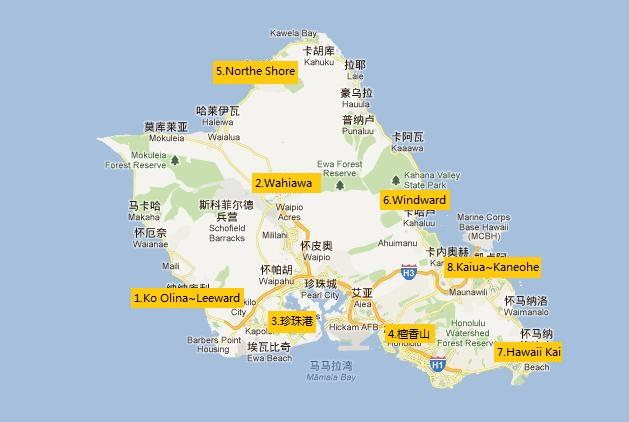

夏威夷 瓦胡岛
Hawaii
Oahu
♦
夏威夷 瓦胡岛
迎接瓦胡岛——人口最多的夏威夷群岛——的热带海风，滨海烤猪野宴和钻石山吧！在威基基海滩追随冲浪祖先杜克卡哈纳莫库的脚印，参观伊奥拉尼皇宫皇家居所和珍珠港。享受热呼呼的本地甜甜圈和刨冰的同时在檀香山的卡帕鲁鲁大道购买老式印刷花恤衫。离开拥挤的旅游道路徒步前往南岸的玛卡普吾灯塔。您甚至可以学习草裙舞。
总面积有1,545.34平方公里，单就面积而言，是夏威夷的第三大岛。瓦胡岛是目前夏威夷最现代化的岛屿，还是古夏威夷各岛国王集会之地和东西文化种族结合的地方。军需服务、旅游、菠萝和糖为重要经济项目。岛上的檀香山（又称为火奴鲁鲁）是美国夏威夷州首府所在。人口953,207人（2010年），占了全夏威夷州三分之二的人口数，是夏威夷群岛中人口最多的岛屿。瓦胡岛最早的居民是乘独木舟到此定居的玻利尼西亚人。他们捕鱼种地，过着自给自足的生活。瓦胡岛上的生活随着后来移民的增多已经变得非常多样化：法国和俄国的商人，美国的捕鲸者和传教士，中国和日本的劳工。每个民族都带来了各自的语言和文化，使瓦胡岛成为一个种族融合的大熔炉。
12月和1月是最冷的月份,冬季下午的平均气温大约在华氏75°。最热的八月和九月气温在华氏90多度。平均温度在华氏75度和85度之间。由于受主信风影响,降雨主要集中在向着海岸的北部和东北部,而南部和东南部包括火奴鲁鲁和威基基相对较干。 岛上有两条东南-西北走向的山脉，群峰耸立，最高峰卡哈拉山，海拔4025英尺（1,220 米），山顶平坦，是瓦胡岛的最高峰，Koolau山顶西部任何地方都可以看到它。
钻石头山
钻石头山是位于美国夏威夷州瓦胡岛东南角的一座死火山，为地质学上称作的凝灰岩锥，传说是女火神Pele的家。“钻石头”的名字由19世纪的英国水手所取，因为他们误以为这里石头中方解石结晶是钻石。地质学家认为造成钻石头山形成的火山喷发最多只持续了几天。这次喷发是火奴鲁鲁火山系列喷发的一部分，这次系列喷发形成了今天瓦胡岛的众多地标。 因为临近旅游度假胜地威基基，钻石头山亦吸引大量游客。火山口约1.1公里长的登山小道是攀登钻石头山的主要道路。攀登往返需要一个半小时至两小时。当地的旅游路牌提醒游客注意小道上不平坦的石头、可能遭遇的横风以及一段可能需要使用手电的隧道。从山顶上可以欣赏到威基基海滩和大部分檀香山市的风景，此处的日落美景同样享有盛誉。火山口内始建于1909年的鲁格要塞曾经是美军在夏威夷地区最早的军事基地，至今钻石头山仍保留有军事设施的遗址，如暗堡和隧道等。 钻石头山已经成为夏威夷群岛的著名地标之一，夏威夷销售的很多纪念品均印有钻石头山的图案。1963年，美国曾拍摄一部以钻石头山为故事背景的同名电影，由查尔顿·赫斯顿主演。近年热播的电视剧集《迷失》也在此取景。
Helena's Hawaiian Food
别看这家店的门面特别不起眼，其实它已经有了60年的历史，是日裔老奶奶经营的一家家庭小餐馆，专营夏威夷传统特色菜。他家每天都有很多人排队，曾被评为火奴鲁鲁所在的欧胡岛上最佳餐厅，如果想品尝地道的夏威夷特色那就一定要光顾这家小店了。
Trump International Hotel Waikiki
海滩距离住宿有3分钟步行路程。 Trump International Hotel Waikiki公寓式酒店距离海滩有不到5分钟步行路程，配有提供全方位服务的spa、提供用餐服务的美丽的室外泳池设施以及免费WiFi。 明亮典雅的客房配有42英寸的平板电视、厨房或小厨房以及带浴袍和拖鞋的意大利大理石浴室，提供洗衣机和滚筒式烘干机。 BLT Steak餐厅在牛排馆环境中供应美味的美式佳肴。Wai’olu酒廊全天提供各种特别饮品，包括液体早餐。 Trump Waikiki酒店的spa提供采用传统夏威夷植物和技术的各式护理服务。客人还可以使用24小时健身房和图书馆。 Trump Waikiki Beach Walk酒店距离威基基水族馆（Waikiki Aquarium）有3分钟路程，距离Ala Wai Golf Course高尔夫球场3.2公里。 威基基海滩步行特朗普国际酒店的 完美服务备受客人称赞，甚至还提供一名 管家。 旅友们喜爱威基基的理由：沙滩漫步、冲浪和沙滩。
We are keen on creating a second skin for anyone with a sense of style! We design our clothes having our customers in mind and we never disappoint!